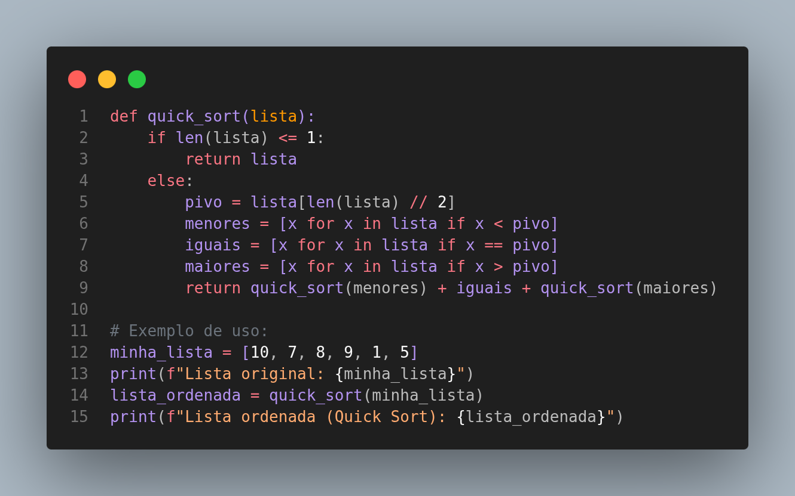

O Quick Sort, ou Ordenação Rápida, é um dos algoritmos de ordenação mais rápidos e amplamente utilizados na prática. Ele também emprega a estratégia "dividir para conquistar". O algoritmo escolhe um elemento da lista, chamado pivô, e reorganiza os outros elementos de forma que todos os elementos menores que o pivô fiquem antes dele e todos os elementos maiores fiquem depois. Este processo é então aplicado recursivamente às sublistas de elementos menores e maiores.
Analogia: Imagine um capitão de time de futebol que precisa dividir seus jogadores em dois grupos: os mais rápidos e os mais lentos. Ele escolhe um jogador como "pivô" (o jogador de referência). Todos os jogadores mais rápidos que o pivô vão para um lado do campo, e todos os mais lentos vão para o outro. Em seguida, ele repete o processo para cada um dos novos grupos, até que todos estejam ordenados por velocidade.
Complexidade: A complexidade do Quick Sort é O(n log n) no caso médio, o que o torna extremamente eficiente para grandes conjuntos de dados. No entanto, no pior caso (quando a escolha do pivô é sempre a pior possível, por exemplo, sempre o menor ou o maior elemento), sua complexidade pode degenerar para O(n²). Na prática, com uma boa estratégia de escolha de pivô, o Quick Sort raramente atinge seu pior caso.
